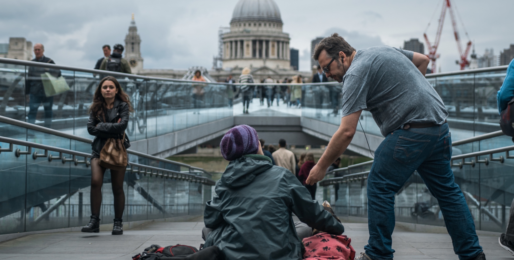

The Northern Polytechnic Lodge was founded in London by lecturers, students and staff, of the North London Polytechnic for further and higher education.

Many of our founders had recently returned from duties in the Second World War and sought to constitute a Masonic Lodge that harboured fellowship and harmony in the post-war era.

Over the years the North London Polytechnic evolved into a constituent part of what is now known as the London Metropolitan University.We still have a couple of members who have a loose connection to the North London Polytechnic, but in truth, this important connection has been diminished.

In recent years the Lodge has re-established its connection with its heritage, by building links with the London's wider student population.

The Lodge provides an annual student bursary to the Sir John Cass Foundation, for students attending the Cass Faculty of Art, Architecture and Design (Part of the London Metropolitan University).

The Lodge is also an active member of the UGLE Universities Scheme, supporting Masons who aspire to develop their Masonic careers alongside their studies, or affording opportunities to London's students who seek the additional light of Freemasonry.